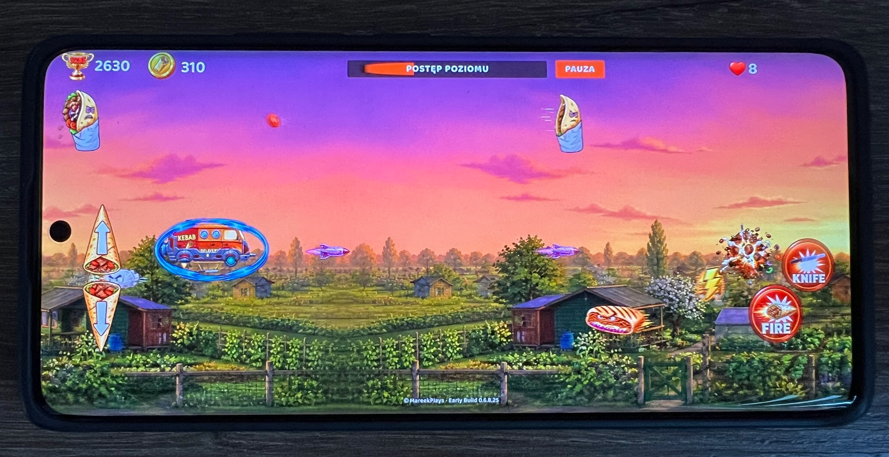
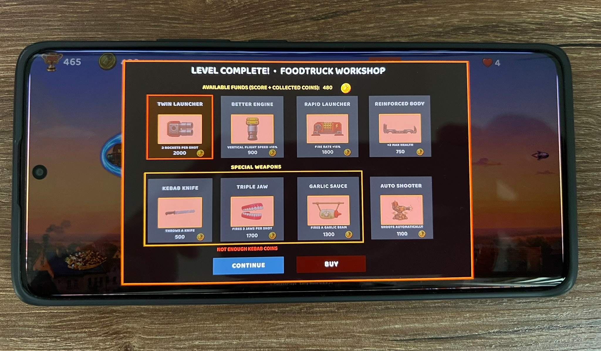

29 SIE 2026 · KEBAB SHOOTER
Nowe zdjęcia z testów Androida i uaktualniona roadmapa.
Nowe zdjęcia od testerów pokazują Kebab Shooter uruchomiony na Androidzie. Roadmapa została uaktualniona o kolejne etapy rozwoju.

Co dalej
Tryb endless — dostępny dla graczy, którzy ukończyli kampanię.

Planowane są również: lokalna tablica wyników, kolejna runda testów, poziomy 8–10 oraz testy końcowe.
Poznaj Kebab Shooter ↗